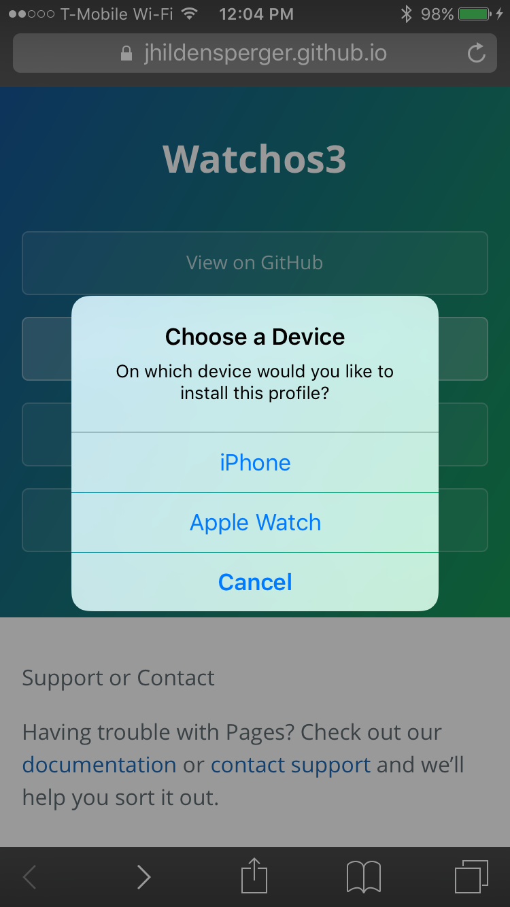

How to install watch OS 3 beta 6
To install the profile on your watch, navigate to https://jhildensperger.github.io/watchos3/ on your phone. Tap the Download profile button at the top of the page and select install on your Apple Watch.
Support or Contact
Having trouble with Pages? Check out our documentation or contact support and we’ll help you sort it out.